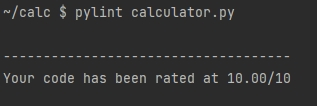
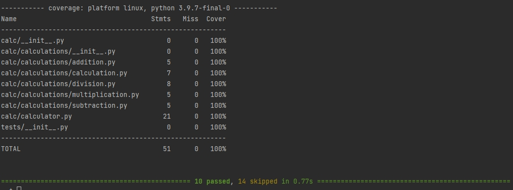

Testing Tools
Testing tools are the tools used to test the program. The testing tools I will mention in this tutorial are pytest, pylint, and coverage.
Pylint
Pylint is a tool used to make sure the python code is written properly. It standardized how python code should be written. Pylint follows the PEP 8 coding style.
Installation
To install pylint
pip install pylint
How to use Pylint
To check python program written in pylint
pylint calculator.py
Output:

After Pylint runs, it determines the score of the program out of 10. If the program does not get a 10 out of 10, Pylint will let you know the problems with how the program's format style which does not follow PEP 8.
Using Pytest with Pylint and Coverage
Pytest is a framework used to help programmers write good programs that uses test programs to check agasint different scenarios.
Coverage checks how effective the tests are. To get 100 percent coverage, make sure the test programs test every method or funtion of the program.
At the root of the repository directory, run the pytest command with the pylint and coverage flags to test the program.
pytest --pylint --cov
Output:

For the result
- It passed all the test cases
- Pylint finds no problem with the code format
- The overall coverage is 100%